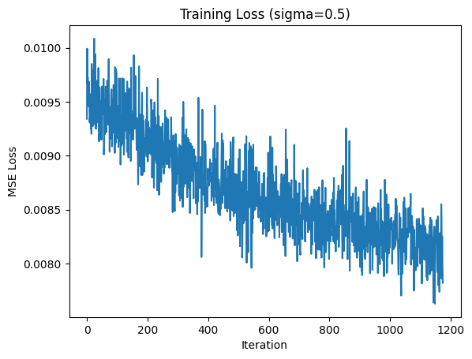
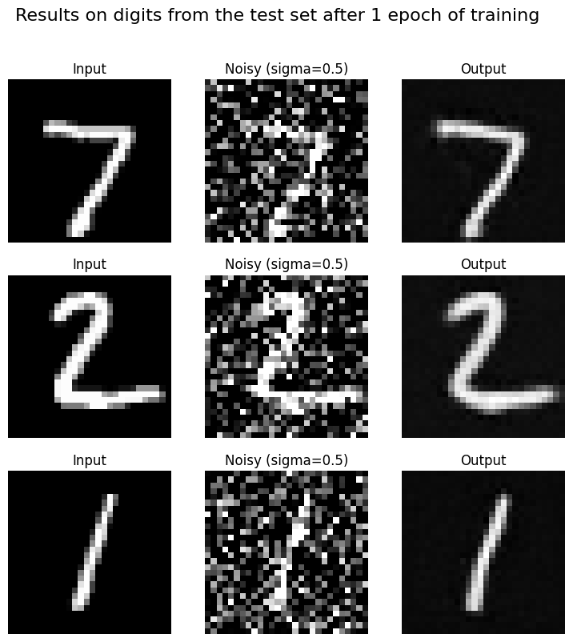
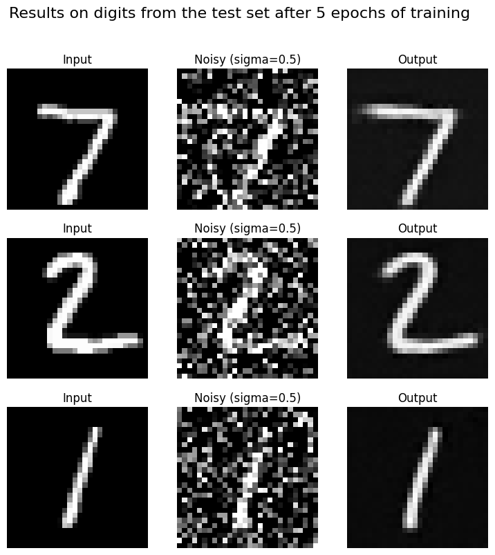

Part 1.1: Implementing a Single-Step Denoising UNet
We implement the denoiser as a compact U-Net with an encoder-decoder architecture and skip connections. The encoder consists of a convolutional block followed by two downsampling blocks that reduce the input from 28x28 to a 7x7 bottleneck, which is flattened to a 1x1 latent representation and then unflattened back to 7x7. The decoder mirrors the encoder using upsampling blocks and channel-wise concatenation with corresponding encoder features to preserve spatial detail, and a final 3x3 convolution maps the features back to the original image shape.
Part 1.2: Using the UNet to Train a Denoiser
We train the UNet as a denoiser by minimizing an L2 loss that encourages the network to map a noisy image z back to its clean target x. For each training batch, we generate supervision pairs (z, x) by sampling Gaussian noise ε ~ N(0, I) and forming z = x + sigma ε for different noise levels sigma. As sigma increases from 0 to 1, the input becomes progressively noisier and the digit structure becomes harder to distinguish, which we verify by visualizing examples across the specified sigma values.
Part 1.2.1: Training
We train the UNet denoiser on MNIST by adding Gaussian noise with a fixed noise level sigma = 0.5 to clean images and optimizing an L2 loss between the denoised output and the original image. During training, noise is applied on-the-fly each time a batch is fetched so the model sees different noisy realizations across epochs, improving generalization. We use the MNIST training set with shuffled batches, train for five epochs using the Adam optimizer, and monitor convergence by plotting the training loss over iterations. We report the training loss curve and visualize denoised results on the test set after the first and fifth epochs, comparing the clean input, noisy input, and the model's output.


